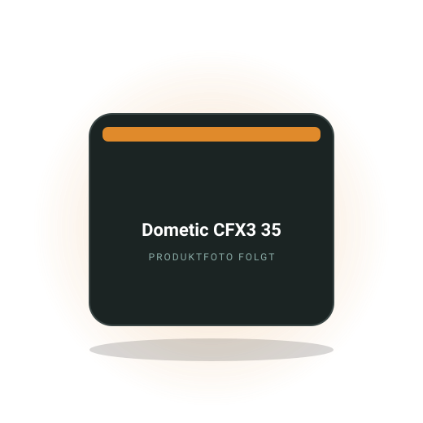

Praxis
Küche im kleinen Camper organisieren: über 25 Hacks aus dem Video
Tellerhalter, Gewürzregal, Klapptisch, Kühlschrank-Lüfter und Ofen-Aufsatz: Küchen-Hacks aus dem Video von Randi's Adventures.
Bereich
Kompressor-Kühlbox oder Absorber, Gas oder Induktion, welches Geschirr nicht klappert und wie du mit wenig Strom kochst. Ratgeber, Vergleiche, Rechenbeispiele und eine Kühlbox-Empfehlung für viele Camper.

Redaktions-Tipp
Die Kompressor-Kühlbox in der Größe, die zwischen Sitzen und Küche vieler Campervans passt und an 12 V sparsam läuft.
Warum wir es empfehlen: Kühlt bis in den Tiefkühlbereich, läuft an Bordbatterie und Powerstation und lässt sich mit Isolierhauben und Befestigungsschienen des Herstellers kombinieren. Die Größe reicht für zwei Personen und ein verlängertes Wochenende.
Preis-Rangeca. 700 bis 950 €Stand Oktober 2026
Bei Amazon ansehenAffiliate-Link *Preis bleibt für dich gleich. Empfehlung nach Verbreitung und Erfahrungsberichten, kein eigener Test.
Kostenlos als PDF
Strom, Schlafen, Küche, Sanitär, Sicherheit, Werkzeug. Zum Abhaken vor jeder Fahrt, damit du nie wieder ohne Ladekabel, Wasserschlauch oder Keil losfährst.
Tellerhalter, Gewürzregal, Klapptisch, Kühlschrank-Lüfter und Ofen-Aufsatz: Küchen-Hacks aus dem Video von Randi's Adventures.
Sieben Küchen-Gadgets aus dem Camper-Alltag: Gläser, Zitronenpresse, Wasserkocher und Stabmixer, mit den Angaben aus dem Video.
Stromverbrauch, Kühlleistung bei Hitze, Lautstärke und Preis der drei Systeme, mit klarer Empfehlung je Stromquelle.
Energiebedarf, Sicherheit, Winter und Gasprüfung: Was für welche Kochart spricht und was eine Induktionsplatte an Wh frisst.
Nudeln, Kaffee, Pfannengericht: gemessene Verbräuche, Wechselrichter-Verluste und was von 1000 Wh übrig bleibt.
Emaille, Melamin, Edelstahl oder Bambus: Was im Schrank hält, in die Spüle passt und nach einem Jahr noch gut aussieht.
Die Fragen, die am häufigsten gesucht werden. Ausführlich beantwortet, mit Zahlen, Rechenwegen und den Fehlern, die du dir sparen kannst.
Für fast alle Camper ist eine Kompressor-Kühlbox mit 30 bis 45 Litern die richtige Wahl: Sie kühlt unabhängig von der Außentemperatur, zieht an 12 V im Mittel 15 bis 35 Watt und läuft an Bordbatterie und Powerstation. Absorber und thermoelektrische Boxen sind nur in Sonderfällen sinnvoll.
Der Kompressor arbeitet wie ein Kühlschrank zu Hause und erreicht auch bei 35 Grad noch Minusgrade im Innenraum. Er läuft getaktet, deshalb liegt der Tagesverbrauch bei 300 bis 700 Wh. Absorber kühlen lautlos mit Gas oder 230 V, schaffen aber nur 25 bis 30 Grad unter Außentemperatur und sind an 12 V Stromfresser. Thermoelektrische Boxen für ca. 50 bis 100 € ziehen dauerhaft 40 bis 60 Watt und kühlen im Sommer kaum. Gute Kompressorboxen kosten ca. 400 bis 1000 €, Stand Oktober 2026.
Beim Kauf auf das Maß achten: Zwischen den Sitzen oder unter der Küche entscheiden oft zwei Zentimeter. Prüfe die Lautstärke im Nachtbetrieb, einige Modelle haben einen Flüstermodus. Und ein Deckel, der sich nach beiden Seiten öffnen lässt, spart im engen Van viel Ärger. Zum Kühlbox-Vergleich
Eine Kompressor-Kühlbox mit 30 bis 45 Litern verbraucht bei 20 bis 25 Grad Außentemperatur etwa 300 bis 500 Wh pro Tag, bei 30 bis 35 Grad 500 bis 800 Wh. An einer 1000-Wh-Powerstation läuft sie damit 1,5 bis 3 Tage, an einer 100-Ah-LiFePO4 ähnlich lang.
Die Aufnahme liegt bei 35 bis 60 Watt, wenn der Kompressor läuft, aber er läuft nur, bis die Zieltemperatur erreicht ist, und pausiert dann. Die Einschaltdauer hängt von Außentemperatur, Isolierung, Füllstand und Öffnungshäufigkeit ab und liegt zwischen 30 und 60 Prozent. Beim Erstkühlen warmer Getränke läuft der Kompressor stundenlang durch, das kann allein 200 bis 300 Wh kosten. Betrieb über 230 V am Wechselrichter addiert 10 bis 15 Prozent Verlust, deshalb immer 12 V nutzen, wenn vorhanden.
Zum Sparen: Lebensmittel vorgekühlt einfüllen, Box voll packen, in den Schatten stellen, Temperatur auf 4 bis 6 Grad statt 2, Isolierhaube drüber. Und die Batterieschutzstufe am Gerät richtig einstellen, sonst schaltet die Box bei LiFePO4 zu früh ab oder bei AGM zu spät. Zu den zehn Sparmaßnahmen
Ja, aber nur mit ausreichend Strom: Eine Induktionsplatte zieht 1200 bis 2000 Watt. Du brauchst einen Reinsinus-Wechselrichter mit mindestens 2000 Watt oder eine Powerstation dieser Klasse und eine Batterie mit 200 Ah oder mehr, wenn du täglich damit kochen willst. Für Nudeln oder Kaffee an der 1-kWh-Powerstation reicht es, für Dauerbetrieb nicht.
Rechenbeispiel: Einen Liter Wasser kochen kostet an der Induktion etwa 100 bis 130 Wh, ein Pfannengericht mit 15 Minuten auf mittlerer Stufe 200 bis 350 Wh, ein Eintopf mit langem Köcheln 400 bis 600 Wh. Eine 1000-Wh-Powerstation schafft damit eine warme Mahlzeit plus Kaffee am Tag, dann ist sie leer. Mit 300 Watt Solar und einer 200-Ah-LiFePO4 geht rein elektrisches Kochen im Sommer gut, im Winter kaum. Dazu kommt der Wechselrichter-Verlust von 10 bis 15 Prozent.
Oft vergessen: Die Platte zieht beim Anlaufen kurz mehr als die Nennleistung, manche Powerstations schalten dann ab. Wähle Platten mit stufenloser Regelung statt Taktbetrieb, das schont Batterie und Nerven. Und nimm Töpfe mit flachem, magnetischem Boden, sonst geht Leistung verloren. Zum Rechenbeispiel Induktion
Fest eingebaute Gasanlagen in Wohnmobilen und Kastenwagen müssen alle zwei Jahre nach G 607 geprüft werden, in Deutschland ist das Pflicht. Mobile Kartuschenkocher dürfen im Camper benutzt werden, wenn du für ausreichende Belüftung sorgst und sie nicht während der Fahrt oder im Schlaf laufen.
Fest verbaute Anlagen mit 5- oder 11-kg-Flaschen im belüfteten Gaskasten gehören bei Ducato-Kastenwagen oder Grand California zum Standard; die Prüfung kostet ca. 40 bis 80 € und wird von Sachkundigen oder Prüforganisationen gemacht. Im VW California und im Nugget arbeitet die Küche mit kleineren Flaschen oder Kartuschen, dort gelten die Herstellerangaben. Kartuschenkocher mit Schraubkartuschen haben eine Überdrucksicherung, billige Stechkartuschen oft nicht. Kohlenmonoxid ist das eigentliche Risiko: Ein CO-Melder kostet ca. 20 bis 40 € und gehört in jeden Camper mit Gas.
Prüfe die Schläuche auf das aufgedruckte Datum, nach zehn Jahren werden sie ersetzt. Lagere Kartuschen nicht in der Sonne und nie lose im Fahrzeug. Und im Ausland brauchst du Adapter für die Flaschen, deutsche Flaschen bekommst du in Frankreich oder Spanien nicht getauscht.
Für zwei Personen und ein verlängertes Wochenende reichen 30 bis 40 Liter, für ein bis zwei Wochen Reise ohne täglichen Einkauf sind 40 bis 50 Liter sinnvoll. Größer wird im Campervan schnell zum Platzproblem, weil das Gehäuse etwa doppelt so viel Raum einnimmt wie der Nutzinhalt.
Als Faustregel pro Person und Tag 5 bis 8 Liter Kühlgut, wenn du Getränke mitkühlst, deutlich weniger ohne. Eine 35-Liter-Box fasst zum Beispiel sechs Flaschen stehend, Butter, Käse, Aufschnitt, Joghurt und etwas Gemüse. Wer Flaschen stehend kühlen will, braucht eine Innenhöhe von mindestens 30 Zentimetern. Zwei-Zonen-Boxen mit Tiefkühlfach beginnen bei 50 Litern und wiegen 20 bis 25 Kilo. Für einen Nugget oder California, wo die Box zwischen den Sitzen oder im Heck steht, sind 35 bis 40 Liter das praktische Maximum.
Tipp: Miss den Stellplatz inklusive Deckelöffnung, viele Boxen brauchen nach oben 40 Zentimeter mehr. Und kühle Getränke lieber in einem zweiten, passiven Kühlbehälter mit Eis aus der Kompressorbox vor. Das hält die teure Box voll und den Verbrauch niedrig.
Bewährt haben sich Melamin-Sets für Teller und Schüsseln, Edelstahl für Töpfe und Becher sowie Silikon-Falttöpfe für enge Schränke. Porzellan ist zu schwer und bruchgefährdet, Bambus-Geschirr quillt bei Dauerfeuchte auf. Ein Set für zwei bis vier Personen kostet ca. 30 bis 100 €, Stand Oktober 2026.
Melamin ist leicht, bruchfest und spülmaschinenfest, verträgt aber keine Mikrowelle und verkratzt über die Jahre. Edelstahl ist unverwüstlich, leitet aber Hitze an den Griff und klappert im Schrank. Emaille sieht gut aus, platzt an Kanten ab und rostet dann. Entscheidend ist das Stapelmaß: Teller, die ineinander passen, Becher, die sich stapeln lassen, Töpfe mit abnehmbarem Griff. Prüfe, ob der große Teller in deine Camper-Spüle passt; viele Spülen in California oder Nugget sind nur 25 bis 30 Zentimeter breit.
Gegen Klappern: Filz- oder Silikonzwischenlagen zwischen Tellern, Töpfe in ein Geschirrtuch wickeln, Becher in Netztaschen. Nimm lieber zwei tiefe Teller als flache plus Schüssel, das spart Platz. Und ein Schneidebrett, das auf das Spülbecken passt, verdoppelt deine Arbeitsfläche. Zur Geschirr-Checkliste
Für Serien-Camper mit vorhandenem Einbaukühlschrank bleibt der Kühlschrank, für Selbstausbauten und Fahrzeuge ohne feste Küche ist die Kompressor-Kühlbox flexibler und oft sparsamer. Eine Box lässt sich rausnehmen, zum Picknick mitnehmen und beim Fahrzeugwechsel behalten; der Einbaukühlschrank gewinnt bei Volumen und Bedienkomfort.
Einbaukühlschränke mit 40 bis 90 Litern sitzen in der Küchenzeile, öffnen nach vorn und lassen sich mit Türfächern übersichtlich einräumen. Dafür entweicht beim Öffnen die kalte Luft, was den Verbrauch um 10 bis 20 Prozent erhöht. Boxen öffnen nach oben, die Kälte bleibt drin, aber du gräbst nach dem Joghurt ganz unten. Beim Preis liegen Kompressor-Einbaukühlschränke bei ca. 500 bis 1200 €, Boxen gleicher Qualität bei ca. 400 bis 1000 €, Stand Oktober 2026. Schubladenkühlschränke verbinden beide Vorteile, kosten aber mehr Platz in der Tiefe.
Beim Ausbau zählt das Gewicht an der richtigen Stelle: Eine 20-Kilo-Box im Heck plus Wasser plus Fahrräder bringt die Hinterachse schnell ans Limit. Und wer die Box als Sitz nutzen will, braucht ein Modell mit stabilem Deckel, nicht jede ist dafür freigegeben.
Noch nicht geholt?
120 Punkte nach Bereichen sortiert. Dazu neue Video-Tests und Ratgeber, sobald sie online sind.
Powerstations, Bordbatterien, Ladebooster, Verbrauch.
›Faltpanels, Dachmodule, Laderegler, Ertrag, Montage.
›Matratzen, Topper, Froli, Aufstelldach, Kälte von unten.
›Campingtoilette, Trenntoilette, Dusche, Entsorgung, Hygiene.
›Frischwasser, Tankhygiene, Filter, Pumpen, Winterfest.
›Standheizung, Diesel oder Gas, Verbrauch, Klimaanlage, Wintercamping.
›